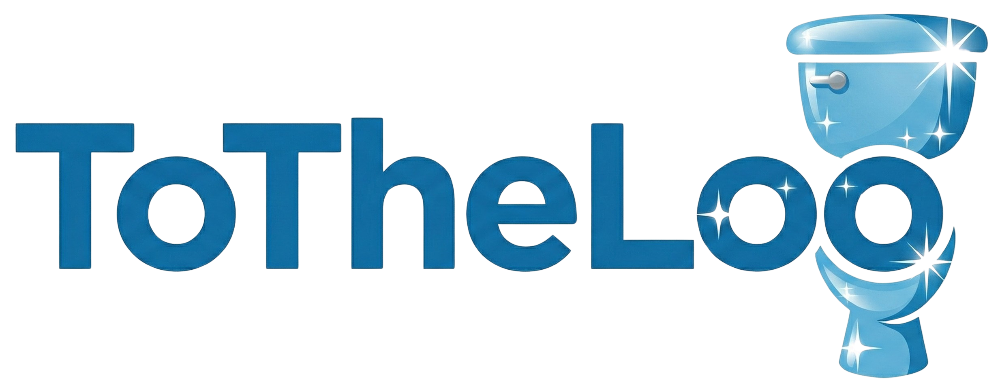

Check whether your business or location already exists inside the ToTheLoo washroom network and see how your area appears within the platform.
Washrooms Mapped
Verified Locations
Gold Star Facilities
Cities Participating
ToTheLoo connects people, cities, businesses, and service organizations into a global washroom access network built on dignity, trust, and community participation.
People searching for washrooms quickly and reliably.
Community members verifying locations and improving data quality.
Businesses offering accessible washroom facilities.
Cities and infrastructure managers improving public access.
Large organizations supporting washroom access worldwide.
Insights that help improve sanitation infrastructure globally.
Every washroom in the ToTheLoo network progresses through a simple quality system that helps users quickly understand reliability and standards.
Mapped locations. These washrooms exist in the system but have not yet been verified.
Verified by ToTheLoo Crew with multiple visits and confirmed details.
Exceptional facilities provided by vendors or highly rated by the community.